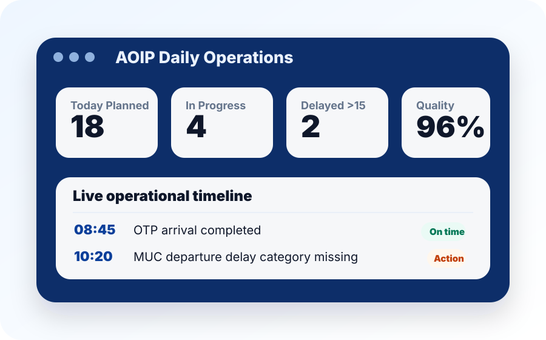
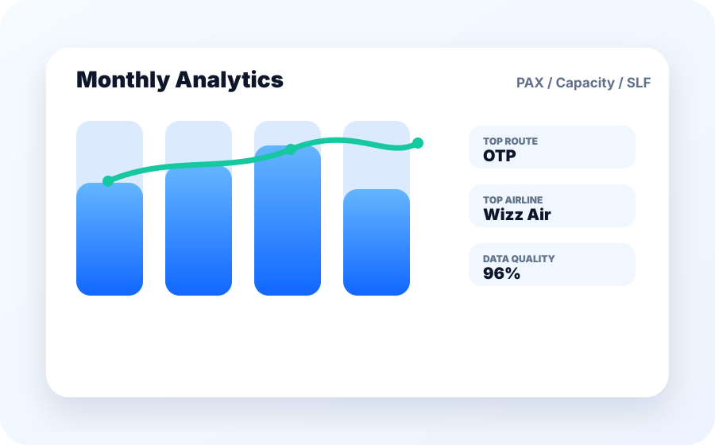
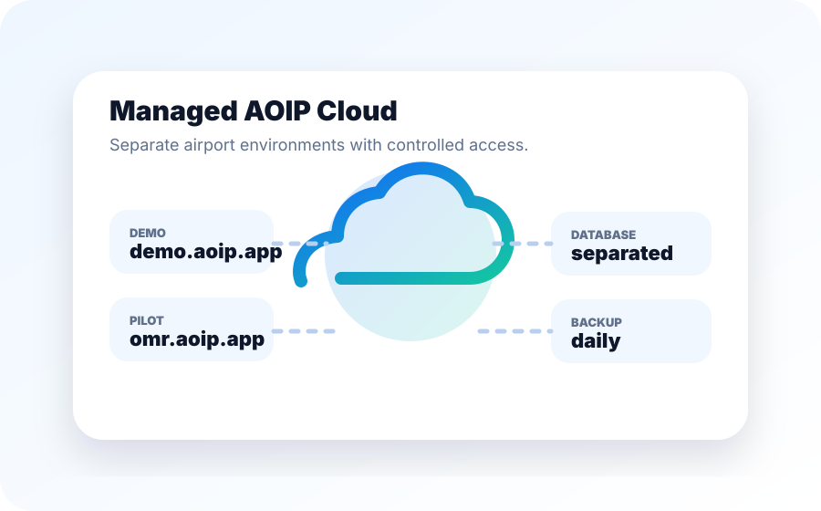

Operations enter once
Commercial, private and service records are captured in a consistent operational workflow.
Airport Operational Intelligence Platform
AOIP helps regional airports record daily operations, monitor live performance, complete trip files and turn operational data into management insight.
Why AOIP
Many regional airports still rely on Excel sheets, manual trip files and fragmented reporting. AOIP creates one structured operational layer where operations teams enter the data, supervisors monitor the day and analysts turn the same records into management insight.
Commercial, private and service records are captured in a consistent operational workflow.
Daily dashboard highlights open flights, delays, missing data and operational attention items.
Daily, weekly and monthly analytics show traffic, routes, airlines, services and data quality.
AOIP in practice

Follow planned, active and completed turnarounds with attention items visible to supervisors.

Track traffic, capacity, SLF, route performance, airline reliability and operational quality.

Separate airport environments support safer pilots, backups, updates and controlled access.
Platform modules
Manage planned, in-progress and completed operations with actual times, delay categories and workflow status.
Generate structured commercial and private trip files from operational records, reducing manual paperwork.
Track GPU, ACU, heater, water, waste, catering, pushback, de-icing and equipment usage.
Record private flights, customers, operators, AOC details, passengers, services and private trip files.
Support operations staff, supervisors, analysts, management read-only users and administrators.
Export route, airline, service and full report datasets for analysis, meetings and internal reporting.
Reporting intelligence
AOIP uses the same operational data across daily, weekly and monthly reports, keeping airport reporting consistent from live operations to management review.
End-of-day operational review with KPIs, live operations, delays, services, private aviation and attention items.
Weekly monitoring of traffic, delays, routes, airlines and service workload with comparison against previous periods.
Management-level reporting for capacity, SLF, route development, airline review, calendar workload and commentary.
Deployment model
AOIP is hosted and maintained as a secure managed platform. Each airport receives its own application environment and separate database.
Available for airports that require internal hosting. On-premise deployment is provided under a separate setup, license, maintenance and update agreement.
Security baseline
AOIP is designed for secured operational access, not as a public open system. It supports protected login, role-based permissions, HTTPS, backups and clear airport data ownership.
Contact
AOIP is being prepared through a controlled airport pilot environment. If you would like to discuss how AOIP could be configured for your airport, contact us and we will review the most suitable setup.
Email: info@aoip.app
Management Commentary
Saved notes help explain route performance, airline reliability, seasonal demand and operational issues.